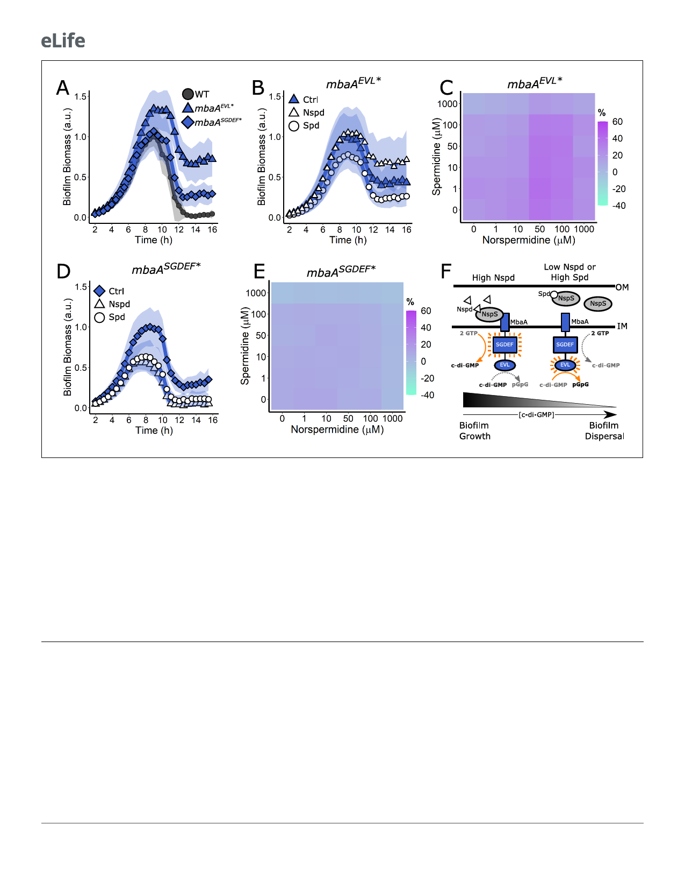

Research article
Microbiology and Infectious Disease
Figure 4. Both the MbaA SGDEF and EVL domains are required for regulation of V. cholerae biofilm dispersal. (A) Quantitation of biofilm biomass over
time for the V. cholerae strains carrying mbaA-3xFLAG, mbaAEVL*À3xFLAG, and mbaASGDEF*À3xFLAG. (B) Quantitation of biofilm biomass over time
measured by time-lapse microscopy for V. cholerae carrying mbaAEVL*À3xFLAG following addition of water (Ctrl), 100 mM norspermidine, or 100 mM
spermidine. (C) c-di-GMP reporter output at the indicated polyamine concentrations for V. cholerae carrying mbaAEVL*À3xFLAG. Relative reporter
signal (% difference) is displayed as a heatmap (teal and purple represent the lowest and highest reporter output, respectively). (D) As in (B) for the
mbaASGDEF*À3xFLAG mutant. (E) As in (C) for the mbaASGDEF*À3xFLAG mutant. (F) Schematic representing the proposed MbaA activities in response
to norspermidine and spermidine. Biofilm biomass data are represented as means normalized to the peak biofilm biomass of the WT strain or Ctrl
condition. In all cases, N = 3 biological and N = 3 technical replicates, ± SD (shaded). a.u.: arbitrary unit. In the c-di-GMP reporter assays, values are
expressed as the percentage difference relative to the untreated WT strain, allowing comparisons to be made across all heatmaps in all figures in this
article. The same color bar applies to all panels in this article. For each condition, N = 3 biological replicates. Numerical values and associated SDs are
available in Supplementary file 1. OM: outer membrane; IM: inner membrane.
The online version of this article includes the following figure supplement(s) for figure 4:
Figure supplement 1. MbaA active site mutations do not alter protein levels.
every regard, the mbaASGDEF* mutant behaved identically to the mbaA mutant. The V. cholerae
D
mbaASGDEF* mutant exhibited a modest biofilm dispersal defect (Figure 4A) and biofilm biomass
was reduced in response to exogenous norspermidine and spermidine (Figure 4D, Video 2). Fur-
thermore, addition of polyamines to the mbaASGDEF* mutant harboring the c-di-GMP reporter did
not drive substantial changes in reporter output (Figure 4E). These results show that the MbaA
SGDEF domain is indispensable for the MbaA response to polyamines.
Based on the results in Figures 3 and 4, we conclude that the MbaA phosphodiesterase and
diguanylate cyclase domains are both required for MbaA to respond properly to polyamines to reg-
ulate V. cholerae biofilm dispersal. We propose a model in which elevated periplasmic norspermi-
dine levels drive NspS to bind to MbaA. Consequently, MbaA phosphodiesterase activity is
suppressed and the diguanylate cyclase activity dominates, which leads to c-di-GMP accumulation
9 of 20